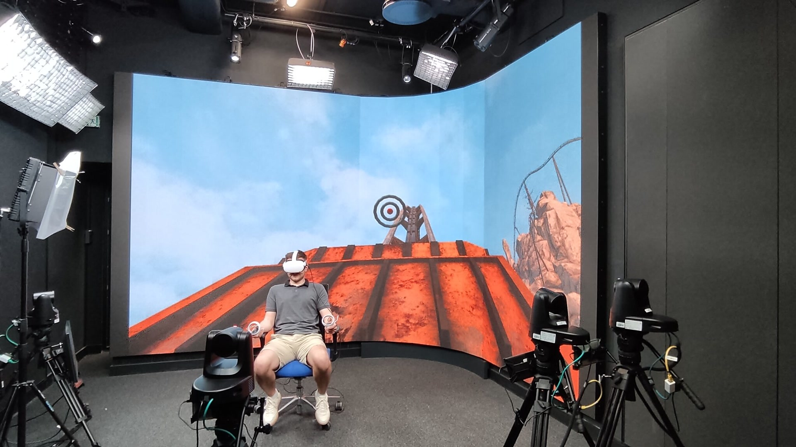
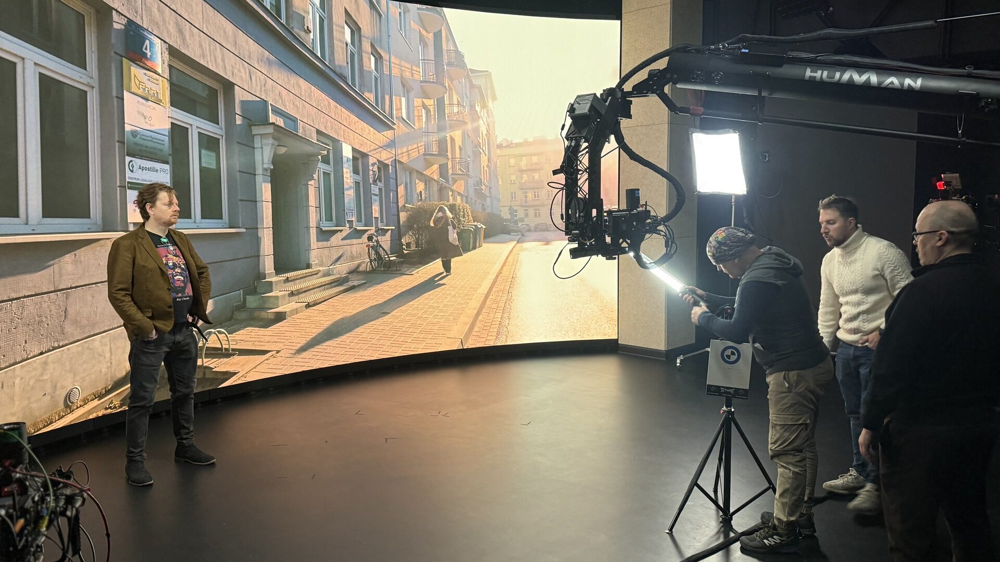

2156 H
NCAGE — Natowski Kod Podmiotu Gospodarki Narodowej
Warszawa · od 1992 roku
Government Relations & Project Management for Strategic Projects
Reprezentujemy firmy polskie i zagraniczne wobec Ministerstwa Obrony Narodowej RP, prowadzimy obrót specjalny na podstawie koncesji i towarzyszymy stronom jako neutralny mediator.

Ostrowski Arms Sp. z o.o. działa w sektorach cywilnych i militarnych. Dzięki koncesji na obrót specjalny prowadzi działalność i zarządza projektami z realizacją kontraktów — zarówno w sektorach w pełni cywilnych, jak i w sektorze militarnym, w Polsce i za granicą.
Przy dużych kontraktach, które zgodnie z prawem danego państwa muszą zostać zawarte bezpośrednio między strukturą podległą rządowi a koncernem lub producentem, Andrzej Ostrowski bywa zapraszany jako project manager wewnątrz struktury koncernu. Doradza wówczas i koordynuje działania handlowe oraz realizację kontraktu — bez nazwy firmy Ostrowski Arms.
Zarządzanie projektami i reprezentowanie firm w Polsce i za granicą, w sektorach ekonomicznych cywilnych i militarnych. Doradztwo i project management.
Reprezentujemy firmy polskie i zagraniczne: otwieramy procedury i koordynujemy projekty oraz oferty dla Sił Zbrojnych RP, opracowujemy i organizujemy prezentacje firm wobec MON i Sił Zbrojnych RP, zarządzamy projektami.
Uzbrojenie dla wojska, technologie podwójnego zastosowania oraz wyposażenie specjalne dla wojska i policji — na podstawie koncesji MSW RP. Realizacja kontraktów handlowych jako Firma Handlu Zagranicznego.
Aranżowanie i koordynacja rozmów, w których strony w skomplikowanych obszarach szukają akceptowalnych rozwiązań — zgodnie z filozofią „Złotego mostu”.
Nauka strzelania z instruktorem, koordynacja procedury pozwolenia na broń, pakiety i vouchery strzeleckie, eventy ze strzelaniem, sprzedaż broni i doradztwo.
Neutralny status firmy
Prezes Andrzej Ostrowski jest zapraszany jako neutralny mediator i project manager z doświadczeniem biznesowo-handlowym. Aranżuje i koordynuje rozmowy, w których skonfliktowane strony szukają pozytywnych mediacji i akceptowalnych rozwiązań — włącznie z koordynacją wymiany handlowej, bezpośrednio lub przez stronę trzecią.

Andrzej Ostrowski
Prezes Zarządu Ostrowski Arms Sp. z o.o.
Projekt „Government Relations & Project Management for Strategic Projects” z osobistą przedmową Prezydenta RP Aleksandra Kwaśniewskiego, w dacie zawarcia kontraktu na zakup przez Polskę samolotów wojskowych F-16.
Projekt, osobiście opracowany i zrealizowany z sukcesem przez Andrzeja Ostrowskiego, wspierał zawarcie największego kontraktu zbrojeniowego zawartego przez Rząd Polski i Departament Stanu USA. Zawiera wystąpienie kolejnego Prezydenta RP Bronisława Komorowskiego, który sprawował m.in. urząd Ministra Obrony Narodowej i Przewodniczącego Sejmowej Komisji Obrony Narodowej.
Andrzej Ostrowski skoordynował wypowiedzi liderów głównych partii politycznych — koalicji rządowej i opozycji parlamentarnej — w tym Marka Sawickiego (PSL), Marszałka Seniora powołanego do otwarcia posiedzenia inaugurującego X kadencję Sejmu RP 13 listopada 2023 roku.
Za realizację projektu Andrzejowi Ostrowskiemu osobiście podziękował Chuck Hagel — 24. Sekretarz Obrony USA w latach 2013–2015 — podczas spotkania w Pałacu Prezydenta RP.

NCAGE — Natowski Kod Podmiotu Gospodarki Narodowej
Obrót specjalny uzbrojeniem, materiałami wybuchowymi, technologiami podwójnego zastosowania oraz wyposażeniem specjalnym dla wojska i policji
Ochrona osób i mienia w formie bezpośredniej ochrony fizycznej oraz zabezpieczenia technicznego

Partner: Veles Productions, Warszawa
Ostrowski Arms może poprowadzić producenta sprzętu obronnego do prestiżowej prezentacji, nagranej w studiu wirtualnej produkcji naszego partnera, Veles Productions. To miejsce na film produktowy, prezentację, symulację i wystąpienie prezesa — oraz na pokaz dla delegacji.
Wirtualna produkcja to prosta idea. Za prowadzącym stoi łukowa ściana LED. Wyświetla dowolne miejsce: hangar, poligon, pawilon wystawowy. Kamera widzi człowieka tak, jakby naprawdę tam był. Obok niego stoi model 3D produktu. Można go obracać, przybliżać, rozłożyć na części i pokazać w symulacji.




Premiera systemu lub pojazdu w scenerii, w której ma pracować.
Model 3D obok prowadzącego: obrót, przybliżenie, widok rozłożony na części, symulacja użycia.
Jeden dzień w studiu. Scenografia siedziby koncernu albo miejsca, o którym mowa.
Zamknięty pokaz w studiu. Rozszerzona rzeczywistość (AR) to grafika dodana do prawdziwego obrazu — goście widzą na ekranie produkt obok prowadzącego.
Ten sam materiał dla wielu rynków: inne tło i napisy, bez ponownego nagrania.
Mobilne studio LED przyjeżdża do klienta: Europa, Bliski Wschód, Afryka Północna.

Umowa o zachowaniu poufności przed przekazaniem materiałów. Zamknięte studio. Na życzenie model uproszczony. Nic nie jest publikowane bez pisemnej zgody klienta.
Wieczór Wyborczy TVP 2023: 10 godzin na żywo, około 4,5 mln widzów. Superpuchar Arabii Saudyjskiej 2025 w Hongkongu: studio wirtualne i AR na żywo. Scenografie wirtualne dla Canal+ Sport.
Wycena jest indywidualna, dla każdego projektu. Rozmowę o koncepcji prowadzi Ostrowski Arms; ofertę studia przygotowuje Veles Productions.
Ostrowski Arms Sp. z o.o.